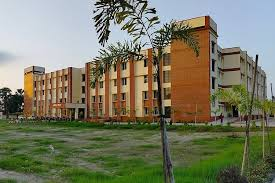
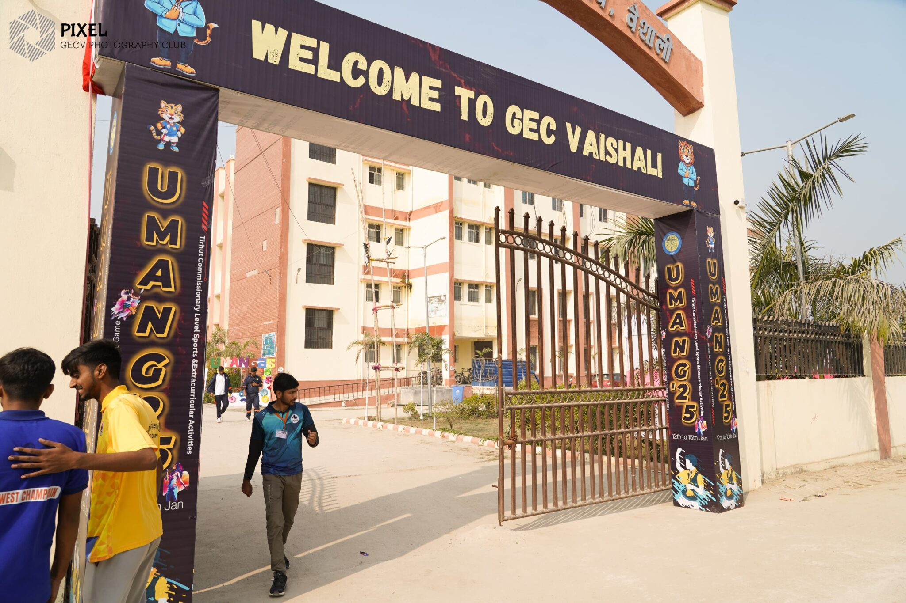

Government Engineering College (GEC), Vaishali is one of the new Government Engineering
College established by the Government of Bihar under the Department of Science, Technology
and Technical Education in 2018.
A centre of Innovation, Excellence & Academic Pursuit: Nestled on the historic lands of Mahavir
and Buddha, Government Engineering College, Vaishali stands as a beacon of engineering education
with a profound social impact. Situated in proximity of Patna, GEC Vaishali, has gained a
distinct image as an outstanding educational colossal among the technical institutions of Bihar
as well as of India, due to its inclination towards innovative and skill-based education.
Its consistent belief in ‘Achieving High’ is aptly reflected in its academics, extracurricular
activities and placements.
From Humble Beginnings to Remarkable Growth: Founded with a modest intake of 240 students across four undergraduate branches (B.Tech), within short span of time, our college has rapidly expanded under the visionary leadership of Principal, Prof. Anant Kumar. Today, we proudly offer seven undergraduate branches (B.Tech) with a total intake of 420 students and five postgraduate branches (M.Tech) with a total intake of 102 students.
 